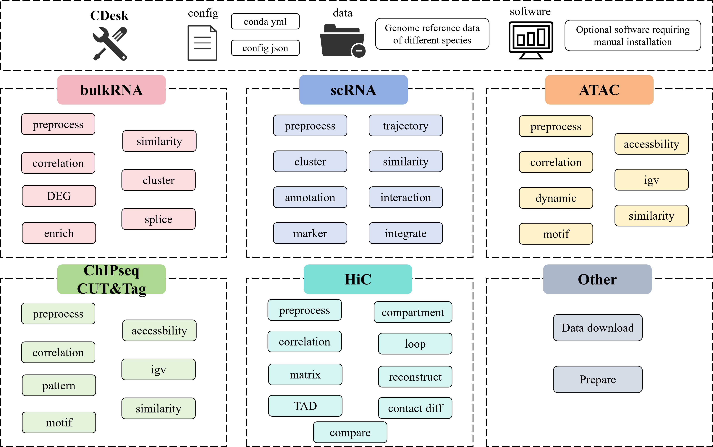

CDesk is an integrated multi-omics analysis pipeline designed for processing data from various sequencing-based assays, including RNA-seq, scRNA-seq, ATAC-seq, CUT&Tag, ChIP-seq, and Hi-C. It comprises multiple subcommands that cover a comprehensive range of analysis tasks, from raw sequencing data process to downstream various advanced functions. Dedicated conda environment YAML files are supplied. To install, simply create the Conda environment from thess files (some functions may require additional software) and prepare the necessary species-specific data. Once configured, users can perform the desired analyses by entering the corresponding command on the command line.

git clone https://github.com/jerry1gotobed/CDesk_develop.git
mamba env create -f CDesk.yml
mamba env create -f CDesk_py3.7.yml
mamba env create -f CDesk_py2.7.yml
mamba env create -f CDesk_R.yml
We provide Conda environments containing the required software, R, and Python dependencies used in the scripts (some tools may require additional manual installation). We recommend using mamba instead of conda for faster environment setup.
Each time you run CDesk, it first checks for the presence of the required CDesk Conda or Mamba environments. You can also specify custom environment paths in the configuration file. If no Conda/Mamba environment is found, CDesk will fall back to your system's default environment. However, this may lead to compatibility issues if dependencies are missing or mismatched.
You need to prepare reference data for the species of interest and specify the corresponding file paths in the config.json configuration file. This file stores paths to genomic data, annotation files, and any additional software installations.
An example configuration is provided below. You can customize it to support additional species or data types. Note that not all fields are required — the specific data and tools needed depend on the task you intend to run. CDesk will check for required resources and exit with an informative error message if any are missing.
{ "software":{ "cellranger":"/home/sugon/Install/cellranger-7.1.0/cellranger", "DrSeq":"/usr/local/bin/DrSeq", "dnbc4tools":"/mnt/linzejie/software/dnbc4tools2.1.3/dnbc4tools", "juicer_tools_jar":"/mnt/kuangjunqi/kuangjunqi/tools/hic/juicer_tools_1.22.01.jar", "dipc":"/mnt/zhaochengchen/Work/OTHER/4.KJQ/2.HiC-Pro/4.hickit/dip-c", "hickit":"/mnt/linzejie/software/hickit-0.1.1_x64-linux/hickit", "hickit_js":"/mnt/linzejie/software/hickit-0.1.1_x64-linux/hickit.js", "celescope_conda":"/mnt/linzejie/miniconda3/envs/celescope" }, "conda_env":{ "CDesk":"/mnt/linzejie/miniconda3/envs/CDesk", "CDesk_R":"/mnt/linzejie/miniconda3/envs/CDesk_py3.7", "CDesk_py3.7":"/mnt/linzejie/miniconda3/envs/CDesk_py3.7", "CDesk_py2.7":"/mnt/linzejie/miniconda3/envs/CDesk_py2.7" }, "data":{ "mm10": { "mapping_index": "/mnt/zhaochengchen/Data/mm10/mm10", "refseq_gtf": "/mnt/zhaochengchen/Data/mm10/mm10.ncbiRefSeq.WithUCSC.gtf", "refseq_bed": "/mnt/zhaochengchen/Data/mm10/mm10.refseq.bed", "chromInfo": "/mnt/zhaochengchen/Data/mm10/mm10.len", "fasta": "/mnt/zhaochengchen/Data/mm10/mm10.fa", "tf_file": "/mnt/zhaochengchen/Data/mm10/Mus_musculus_TF.txt", "promoter_file": "/mnt/liudong/data/Genome/mm10/mm10.promoter.ncbiRefSeq.WithUCSC.bed", "TE_idx": "/mnt/liudong/data/Genome/mm10/mm10.exclusive.idx", "scRef10x": "/mnt/liudong/data/Genome/mm10Self", "effective_genome_size": "mm", "gff3":"/mnt/linzejie/data/mm10.gff3", "refgenes":"/mnt/linzejie/data/Drseq_data/refgenes/mm10.refgenes.txt", "bowtie2_mapindex":"/mnt/linzejie/data/Drseq_data/bowtie2/mm10/mm10", "singleron_mapindex":"/mnt/linzejie/data/celescope_data/mm10", "dnbc_mapindex":"/mnt/linzejie/data/dnbc4tools_data/mm10" }, "rn7": { "mapping_index": "/mnt/liudong/data/Genome/rn7/rn7", "refseq_gtf": "/mnt/liudong/data/Genome/rn7/rn7.refGene.gtf", "refseq_bed": "/mnt/liudong/data/Genome/rn7/rn7.refGene.fix.bed", "chromInfo": "/mnt/liudong/data/Genome/rn7/rn7.len", "fasta": "/mnt/linzejie/data/fasta/rn7.fa", "tf_file": "/mnt/liudong/data/Genome/rn7/Rattus_norvegicus_TF.txt", "promoter_file": "/mnt/liudong/data/Genome/rn7/rn7.refGene.promoter.bed", "TE_idx": "/mnt/linzejie/data/rn7.exclusive.idx", "scRef10x": "/mnt/linzejie/data/cellranger_data/rn7", "effective_genome_size": "2.37e9", "gff3":"/mnt/linzejie/data/rn7.gff3", "refgenes":"/mnt/linzejie/data/Drseq_data/refgenes/rn7.refgenes.txt", "bowtie2_mapindex":"/mnt/linzejie/data/Drseq_data/bowtie2/rn7/rn7", "singleron_mapindex":"/mnt/linzejie/data/celescope_data/rn7", "dnbc_mapindex":"/mnt/linzejie/data/dnbc4tools_data/rn7" }, "hg38": { "mapping_index": "/mnt/zhaochengchen/Data/hg38/hg38", "refseq_gtf": "/mnt/zhaochengchen/Data/hg38/hg38.ncbiRefSeq.WithUCSC.gtf", "refseq_bed": "/mnt/zhaochengchen/Data/hg38/hg38.refseq.bed", "chromInfo": "/mnt/zhaochengchen/Data/hg38/hg38.len", "fasta": "/mnt/zhaochengchen/Data/hg38/hg38.fa", "tf_file": "/mnt/zhaochengchen/Data/hg38/Homo_sapiens_TF.txt", "promoter_file": "/mnt/zhaochengchen/Data/hg38/hg38.Promoter.bed", "TE_idx": "/mnt/liudong/data/Genome/hg38/hg38.exclusive.idx", "scRef10x": "/mnt/linzejie/data/cellranger_data/hg38", "effective_genome_size": "hs", "gff3":"/mnt/linzejie/data/hg38.gff3", "refgenes":"/mnt/linzejie/data/Drseq_data/refgenes/hg38.refgenes.txt", "bowtie2_mapindex":"/mnt/linzejie/data/Drseq_data/bowtie2/hg38/hg38", "singleron_mapindex":"/mnt/linzejie/data/celescope_data/hg38", "dnbc_mapindex":"/mnt/linzejie/data/dnbc4tools_data/hg38" }, "susScr11": { "mapping_index": "/mnt/zhaochengchen/Data/susScr11/susScr11", "refseq_gtf": "/mnt/liudong/data/Genome/susScr11/susScr11.ncbiRefSeq.gtf", "refseq_bed": "/mnt/liudong/data/Genome/susScr11/susScr11.refseq.bed", "chromInfo": "/mnt/zhaochengchen/Data/susScr11/susScr11.chrom.sizes", "fasta": "/mnt/linzejie/data/fasta/susScr11.fa", "tf_file": "/mnt/liudong/data/Genome/susScr11/Sus_scrofa_TF.txt", "promoter_file": "/mnt/liudong/data/Genome/susScr11/susScr11.Promoter.bed", "TE_idx": "/mnt/liudong/data/Genome/susScr11/susScr11.exclusive.idx", "scRef10x": "/mnt/liudong/data/Genome/susScr11Self", "effective_genome_size": "2.36e9", "gff3":"/mnt/linzejie/data/susScr11.gff3", "refgenes":"/mnt/linzejie/data/Drseq_data/refgenes/susScr11.refgenes.txt", "bowtie2_mapindex":"/mnt/linzejie/data/Drseq_data/bowtie2/susScr11/susScr11", "singleron_mapindex":"/mnt/linzejie/data/celescope_data/susScr11", "dnbc_mapindex":"/mnt/linzejie/data/dnbc4tools_data/susScr11" }, "galGal6": { "mapping_index": "/mnt/zhaochengchen/Data/Gal6/galGal6", "refseq_gtf": "/mnt/zhaochengchen/Data/Gal6/galGal6.ncbiRefSeq.WithUCSC.gtf", "refseq_bed": "/mnt/zhaochengchen/Data/Gal6/galGal6.refseq.bed", "chromInfo": "/mnt/zhaochengchen/Data/Gal6/galGal6.chrom.sizes", "fasta": "/mnt/linzejie/data/fasta/galGal6.fa", "TE_idx": "/mnt/linzejie/data/galGal6.exclusive.idx", "scRef10x": "/mnt/linzejie/data/cellranger_data/galGal6", "effective_genome_size": "1.0e9", "tf_file": "/mnt/zhaochengchen/Data/Gal6/Gallus_gallus_TF.txt", "promoter_file": "/mnt/linzejie/data/galGal6.Promoter.bed", "gff3":"/mnt/linzejie/data/galGal6.gff3", "refgenes":"/mnt/linzejie/data/Drseq_data/refgenes/galGal6.refgenes.txt", "bowtie2_mapindex":"/mnt/linzejie/data/Drseq_data/bowtie2/galGal6/galGal6", "singleron_mapindex":"/mnt/linzejie/data/celescope_data/galGal6", "dnbc_mapindex":"/mnt/linzejie/data/dnbc4tools_data/galGal6" } } } - software: Saves the ptional software requiring manual installation - conda_env: The conda environments path - data: Saves the genome reference data of different species
1.1 bulkRNA: Preprocess
1.2 bulkRNA: Correlation
1.3 bulkRNA: DEG
1.4 bulkRNA: Enrich
1.5 bulkRNA: Similarity
1.6 bulkRNA: Clustering
1.7 bulkRNA: Splice
2.1 scRNA: Preprocess
2.2 scRNA: Cluster
2.3 scRNA: Annotation
2.4 scRNA: Marker
2.5 scRNA: Trajectory
2.6 scRNA: Similarity
2.7 scRNA: Interaction
2.8 scRNA: Integrate
3.1 ATAC: Preprocess
3.2 ATAC: QC
3.3 ATAC: Dynamic
3.4 ATAC: Motif
3.5 ATAC: Accessbility
3.6 ATAC: IGV
3.7 ATAC: Correlation
4.1 ATAC: Preprocess
4.2 ATAC: QC
4.3 ATAC: Pattern
4.4 ATAC: Motif
4.5 ATAC: Accessbility
4.6 ATAC: IGV
4.7 ATAC: Correlation
5.1 HiC: Preprocess
5.2 HiC: Sample Correlation
5.3 HiC: Matrix balancing and Format transformation
5.4 HiC: TAD
5.5 HiC: Compartment
5.6 HiC: Loop
5.7 HiC: 3D reconstruction
5.8 HiC: Distance-contact
5.9 HiC: Contact compare